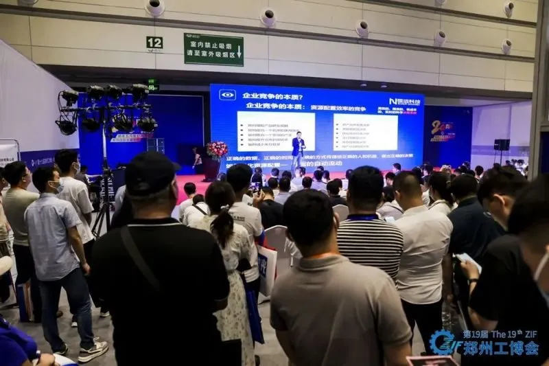
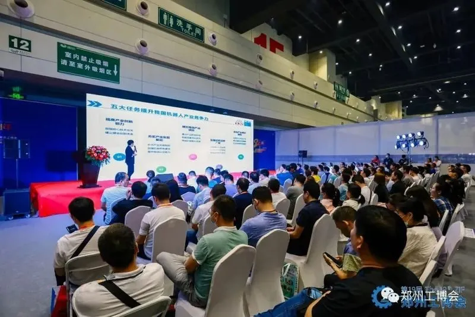
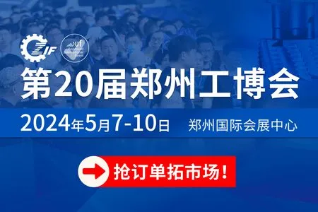

论坛预告 | 目标双碳，看钢结构行业在数字化转型中如何放大招！
首页 / 论坛预告 | 目标双碳，看钢结构行业在数字化转型中如何放大招！
2024钢结构数字化转型
高质量发展论坛
会议背景：
近年来，在“双碳”总政策纲领下，“减排”和“可持续发展”成为我国工业发展的核心要义。钢铁作为“工业粮食”，是制造强国建设的重要基石。钢铁作为许多先进脱碳技术的关键材料，是推进绿色低碳可持续发展的重要组成部分。钢铁工业具有生产流程连续、工艺体系复杂、产品中间态多样化、大型高温高压设备集中、人因安全要求高等特征，属于典型的流程型制造业，面临着严峻的资源、市场、环保、竞争等挑战，亟需通过智能制造先进技术和装备的场景应用，提高行业的绿色环保水平、安全保障能力、生产制造效率。
根据联合国城镇化展望报告，到2050年世界城镇人口将再增25亿，持续的城市化、工业化、信息化对资源的需求将进一步增长，强劲的基础设施建设，将对全球钢铁材料的需求发挥支撑作用。钢结构广泛用于能源、建筑、桥梁、交通、石油化工等行业，市场空间将持续增长。
由振威会展集团将于2024郑州工业装备博览会期间举办“2024钢结构数字化转型高质量发展论坛坛”旨在围绕当前钢结构产业数字化转型中的挑战与机遇、路径与方案，从宏观、政策、产业、趋势和数字化应用等多角度、全方位，探讨钢结构行业发展，推动钢结构实现绿色低碳和高质量发展展开交流研讨。


会议规模：300人
会议时间：2024年5月7日下午
会议地点：2024郑州工博会现场--论坛区
会议议程（拟）
12:30-13:30
签到
13:30-14:00
“未来钢铁”路线图：坚持高端化、绿色化、智能化、高效化
——宝武集团
14:00-14:30
数字孪生技术在新工厂顶层规划中的应用
——华工科技
14:30-15:00
双碳背景下钢结构住宅的研究与发展趋势
——中国建筑设计研究院公司
15:00-15:30
钢结构加工数字化转型解决方案
——鞍钢股份
15:30-16:00
中国钢结构智能制造与建筑工业化转型
——中建科工华南钢架构公司
16:00-16:30
主体工艺装备、工业软件的国产化替代
——中国钢铁工业协会
*最终议程安排以现场公布为准
拟邀参会观众：
安钢集团
河南天丰集团有限公司
河南二建集团钢结构有限公司
河南正大建设集团有限公司
安阳市大正钢板仓有限责任公司
河南亚鹰钢结构幕墙工程有限公司
南阳汉冶特钢有限公司
河南凤宝特钢有限公司
河南济源钢铁（集团）有限公司
郑州捷安高科股份有限公司
郑州昌煜实业有限公司
河南大建钢构股份有限公司
郑州水工机械有限公司
中铁大桥（郑州）工程机械有限公司
河南鑫鼎钢构工程有限公司
河南大成精工有限公司
河南建力钢结构工程有限公司
河南鸿润钢结构工程有限公司
河南天盛钢结构工程有限公司
河南源鑫钢结构公司
河南鲲赢钢结构有限公司
安阳市中正钢结构有限公司
安阳旭隆钢构工程有限公司
......
